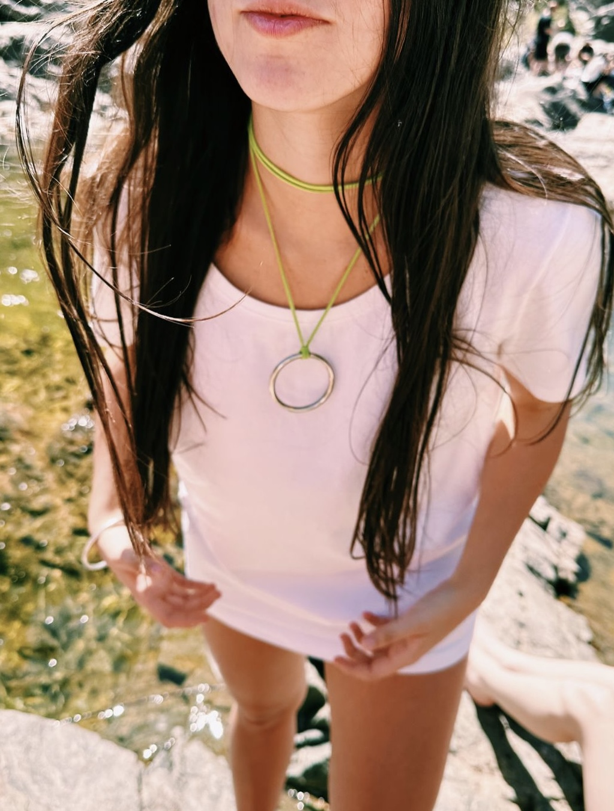

<!DOCTYPE html>
<html lang="en">
<head>
    <meta charset="UTF-8">
    <meta name="viewport" content="width=device-width, initial-scale=1.0">
    <!--fuentes de google-->
    <link rel="preconnect" href="https://fonts.googleapis.com">
    <link rel="preconnect" href="https://fonts.gstatic.com" crossorigin>
    <link href="https://fonts.googleapis.com/css2?family=DM+Serif+Display:ital@0;1&family=Montserrat:ital,wght@1,900&family=Playfair+Display+SC:ital,wght@0,400;0,700;0,900;1,400;1,700;1,900&family=Playfair+Display:ital,wght@0,400..900;1,400..900&family=Roboto:wght@100;300;900&display=swap" rel="stylesheet"> 
    <link rel="icon" href="img/shud.jpeg"><!--icono al lado del titulo-->
    <link rel="stylesheet" href="estilo.css">   <!--vinculo con CSS-->
    <script async src="/js/script.js"></script> <!--vinculo con JS-->
    <title>shud.arg</title>
     <!--vinculo con bootstrap-->
    <link href="https://cdn.jsdelivr.net/npm/bootstrap@5.3.3/dist/css/bootstrap.min.css" rel="stylesheet" integrity="sha384-QWTKZyjpPEjISv5WaRU9OFeRpok6YctnYmDr5pNlyT2bRjXh0JMhjY6hW+ALEwIH" crossorigin="anonymous">
</head>

<body>
    </html>
    <header>
        <h1>SHUD</h1>
        
        <nav>
            <ul>
                <li> <a href="./paginas/pulseras.html">PULSERAS</a></li>
                <li> <a href="./paginas/tobilleras.html">TOBILLERAS</a></li>
                <li> <a href="./paginas/lazos.html">LAZOS</a></li>
                <li> <a href="./paginas/collares.html"> COLLARES</a></li>
            </ul>
        </nav>
    </header>

<main>

<section class="shud">
    <h2> <strong> ¡Hola a todos los amantes del estilo y la magia del universo! </strong></h2>
    <p>Nuestra colección abarca una variedad de estilos, desde símbolos universales hasta formas inspiradas en la naturaleza.</p>
    <p>Si buscas protección y buena suerte, encontrarás piezas impregnadas con el poder de antiguos símbolos como el ojo turco, el gato de la suerte y la mano de Fátima. <br> Estos accesorios no solo son hermosos, sino que también te brindan una sensación de seguridad y conexión con el universo.</p>
    <p> Pero no nos detenemos ahí. También ofrecemos diseños que capturan la esencia del amor y la belleza del cosmos, con corazones, lunas y estrellas que iluminarán tu estilo con un toque romántico y mágico.</p>
    <p>Nuestros accesorios no solo son un regalo para adornar el cuerpo, sino también para alimentar el alma. <br> ¿Qué mejor manera de demostrar tu amor y aprecio que regalando una pieza que no solo embellece, sino que también trae consigo deseos de prosperidad y protección?.</p>
</section>
    <section class="amuletos">

        <div class="box-cat">
    
    <h3>LUCKY CAT</h3>
    <p>El gato de la suerte o gato de la fortuna es una popular escultura japonesa que, según se dice, trae buena suerte a su dueño. </p>
        </div>

        <div class="box-ojo">
    
    <h3>OJO TURCO</h3>
    <p> Se utiliza para la protección contra la influencia negativa de la envidia, tradicionalmente conocida como ‘mal de ojo’.</p>
        </div>
        
        <div class="box-mano">
    
    <h3> MANO HAMSA</h3>
    <p>Quienes utilizan la mano de Fátima como amuleto lo hacen en la creencia de que les protegerá y les aportará suerte y paciencia. Además, también se usa como potente talismán contra el mal de ojo, la envidia, las malas miradas y </p>
        </div>

</section>

<section class="mix-fotos">
    
    
    
    
    
    
    
    
</section>

<section class="ultimo-texto">
    <p>Nuestros accesorios no solo son una declaración de estilo, sino también una manifestación de tus creencias, emociones y deseos. <br> Ya sea que busques atraer la buena fortuna, celebrar el amor o simplemente expresar tu conexión con el universo, tenemos algo para cada ocasión y cada estado de ánimo. </p>
    <p> Únete a nosotros en este viaje hacia la autenticidad y la expresión personal. <br> Con nuestros accesorios, no solo te destacarás en estilo, sino que también llevarás contigo un pedacito de magia y significado en cada momento de tu vida.</p>
    <p>¡Descubre la belleza y la energía positiva de nuestra colección hoy mismo!</p>
</section>
</main>

<footer>
    <ul class="nav justify-content-center --bs-dark >
        <li class="nav-item">
          <a class="nav-link active" aria-current="page" href="index.html">inicio</a>
        </li>
        <li class="nav-item">
          <a class="nav-link" href="./paginas/collares.html">collares</a>
        </li>
        <li class="nav-item">
          <a class="nav-link" href="./paginas/lazos.html">lazos</a>
        </li>
        <li class="nav-item">
            <a class="nav-link" href="./paginas/pulseras.html">pulseras</a>
          </li>
          <li class="nav-item">
            <a class="nav-link" href="./paginas/tobilleras.html">tobilleras</a>
          </li>
        
      </ul>
</footer>

<!--vinculo con bootstrap-->
<script src="https://cdn.jsdelivr.net/npm/bootstrap@5.3.3/dist/js/bootstrap.bundle.min.js" integrity="sha384-YvpcrYf0tY3lHB60NNkmXc5s9fDVZLESaAA55NDzOxhy9GkcIdslK1eN7N6jIeHz" crossorigin="anonymous"></script>
</body>
</html>